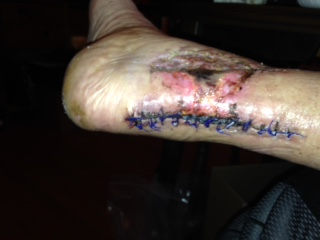
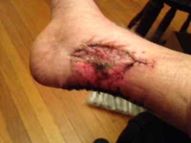
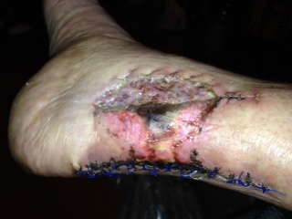

Not for the Squeamish 3

As bizarre as it sounds, this is the best it's looked. The
pink around the center scab used to be a purple haze and you can see
areas scabbing over.

Doesn't look much different, it's healing slowly, but there is
progress...

The center scab by the graft looked better than it has in the past
This is going to take a while to heal, but it's not infected and there
is visible progress. Color me happy...